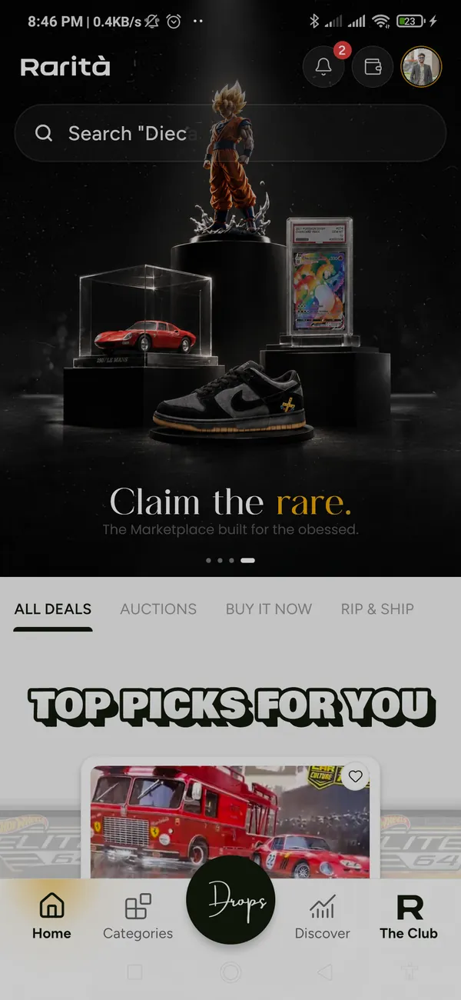
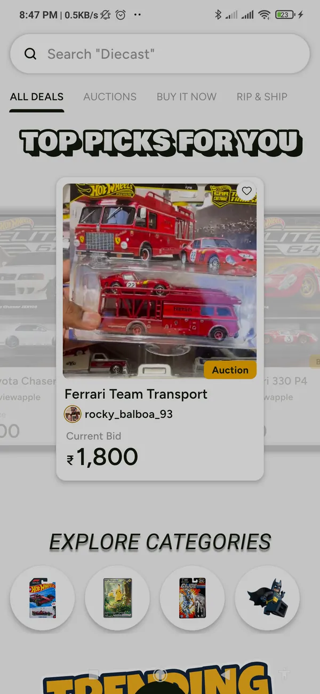
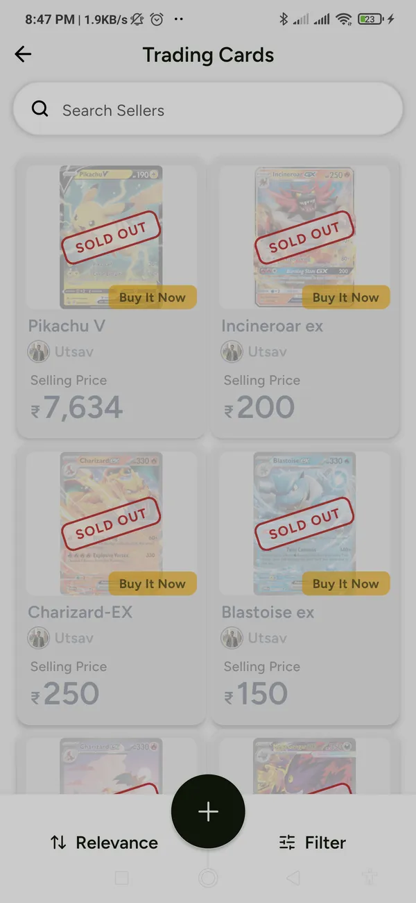
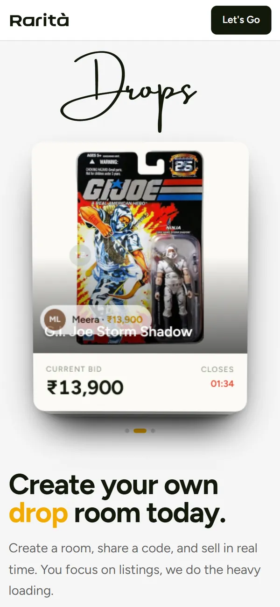
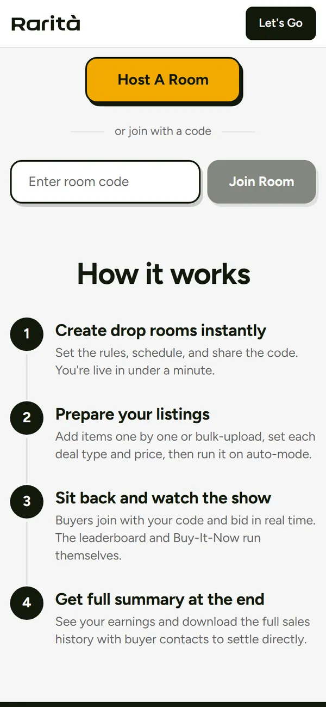
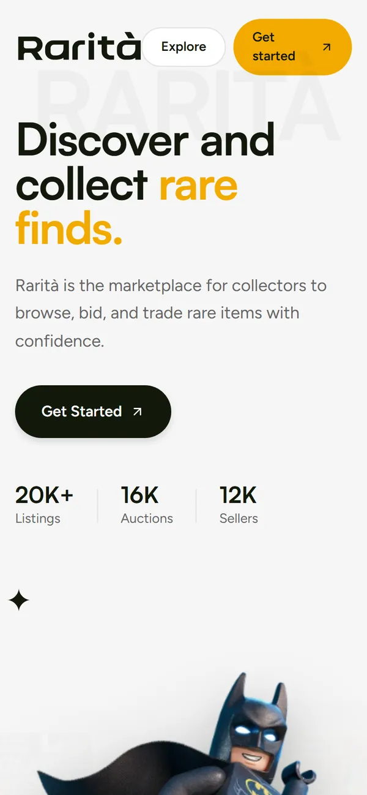

available immediately · remote across India
Utsav Pipersaniya
Backend, data & AI engineer. I build the parts that have to stay correct when nobody is watching.
ETL that runs unattended, bidding that can't double-count under concurrency, and AI features that fail closed instead of hallucinating into a database. Python, Django, PostgreSQL, Redis, Celery. Most of this page runs: poke it.
Hops are the real architecture. Timings are illustrative.
GET /work/sustainext
Two years and eight months of ESG data.
Backend Engineer · Sustainext · Dec 2023 to Jul 2026An enterprise ESG and sustainability reporting platform. I owned several distinct pieces of it rather than one service. Tap a row.
Postgres indexing, N+1 removal, ORM tuning
moved onto a Celery + Redis worker fleet
Both measured before and after, not estimated.
-
Extract from an external source, transform with pandas and NumPy, load into PostgreSQL on a Celery Beat schedule, thousands of records per run. I built the data-quality layer around it: type coercion, normalization, validation, and handling malformed or partial payloads so a bad upstream response never corrupts a load.
It brought in five more clients. Live progress streams to the browser over Server-Sent Events, my call over a short-polling proposal: one long-lived connection instead of a request every few seconds per open tab.
pandasNumPyCelery BeatSSEPostgreSQL -
Answers sustainability questions and questions about the customer's own data. Retrieval over pgvector inside PostgreSQL with OpenAI models, but it goes past document RAG: it queries live records, so answers reflect the real dataset rather than a static corpus. Orchestration is written directly against the provider SDK, which keeps latency and token cost under direct control. See how it routes ↓
pgvectorOpenAI APItool callingDjango -
Emission calculations used to call a paid external factor API. I built our own factor database so the hot path resolves factors locally, which reduced third-party API costs and removed a network dependency from every calculation.
PostgreSQLdata modelling -
Automated emission calculation and aggregation across reporting periods, entities and categories, feeding the disclosures customers actually publish.
PythonDjango ORMSQL -
I built the platform's Redis caching layer and its invalidation strategy, moved long-running work onto a Celery worker fleet (the ≈60% above), and run scheduled jobs through Celery Beat.
RedisCeleryCelery Beat -
Over a hundred production endpoints in Django REST Framework, file storage on Azure Blob, and deployment on Linux behind Nginx and Gunicorn in Docker, fronted by Cloudflare.
DRFAzure BlobDockerNginxCloudflare
POST /listings/42/bids · Rarità · freelance since Jul 2026
Two people bid ₹16,000 at the same millisecond. Who won?
A hot auction takes many concurrent bids. Read-modify-write on a shared price lets two of them interleave, and both bidders get told they're winning. Run it both ways.
biddersWebSocket
redis · HASH listing:42authoritative
postgres · bids0 rows
| seq | bidder | amount |
|---|
Check and write in one step.
Every bid runs through a single Lua script inside Redis. Redis executes scripts one at a time, so no other bid can land between the price check and the write. The script only accepts a bid that strictly beats the current price, so the latest accepted bid is the leader by definition.
Simplified sketch of the idea, not the production script.
-- KEYS[1] = listing hash, KEYS[2] = bid buffer
local price = tonumber(redis.call('HGET', KEYS[1], 'price_paise'))
local bid = tonumber(ARGV[1]) -- integer paise
if bid <= price then return {0, price} end
local seq = redis.call('HINCRBY', KEYS[1], 'seq', 1)
redis.call('HSET', KEYS[1], 'price_paise', bid, 'leader', ARGV[2])
redis.call('RPUSH', KEYS[2], cjson.encode({seq = seq, bid = bid, user = ARGV[2]}))
return {1, seq}Money is integer paise.
Lua numbers are doubles. Holding currency as paise keeps every amount well inside 253, so the arithmetic is exact.
Postgres gets it in batches.
A periodic Celery task drains the buffer. Each bid carries a monotonic per-listing seq and the hash tracks how far persistence has got, so re-draining is a no-op. Try the crash button.
Closing never trusts timing.
Every auction-close path force-drains that listing's buffer before picking a winner, rather than waiting on the periodic drain.
There's an off switch.
The engine sits behind a feature flag. Off, every caller falls back to the original synchronous database path. An optimization you can't switch off is a liability.
PUT /catalogue/import · idempotent
Seven messy rows. How many real things?
Rarità's catalogue importer: normalize, hash a dedup key, match exactly first, then fall back to PostgreSQL trigram similarity inside a bucket of brand, scale and packaging. Run it, run it again, and drag the threshold to see the trade-off.
| raw csv row | normalized*_norm keys | dedup_keysha1 of norm keys | matchexact, then trigram in bucket | action |
|---|
catalogue entities after load
New formats, no migration.
Core columns map to first-class fields; everything else folds into a JSON attributes column, so a new source format loads without a schema change.
One identity, two loaders.
The bulk importer and the incremental monthly fetcher derive the same dedup key, so they agree on what counts as the same record, and re-running a load changes nothing.
Buckets keep fuzzy matching honest.
Trigram similarity is only compared inside the same brand, scale and packaging. A loose car never merges into a carded one, however similar the names.
POST /chat/ask · Sustainext Chat
Docs, live data, or both.
A question about a reporting standard needs retrieval. A question about your own emissions needs a database query. Pick one and watch it route.
- Embed the question
- pgvector nearest neighbours
- Tool call against live platform data
- Compose a grounded answer
Illustrative walkthrough with demo numbers. Not Sustainext's UI or data.
POST /support/reply · Rarità
The safety boundary lives in the schema.
An AI first responder on support conversations, grounded strictly on a cached knowledge base built from the FAQ table and legal docs, with bounded prompt and history so token cost stays predictable. It must return {answer, escalate}; anything account-specific, financial or sensitive hands off to a human.
POST /scan · Rarità
Identify first. Price second.
Two-stage vision: stage one extracts a structured catalogue card from photos with no pricing in sight; stage two runs a separate search-grounded valuation against sold comparables. Splitting them stopped price speculation leaking back into identification.
provider = config (Gemini live; OpenAI, Claude behind the same interface) · malformed output fails closed, retries with backoff
GET /listings?sort=trending
Three weeks of views vs. one good day.
Lifetime counters mean an old listing always beats yesterday's breakout. Rarità keeps rolling counts in one Redis hash per hour, so recomputing the whole site costs a fixed number of reads however big the catalogue gets. Slide the half-life.
trending nowGET 200 · 4ms
Redis unreachable. Ranking degrades to lifetime rates; the request that records a view still succeeds. Every entry point swallows its own exceptions.
lifetime counter would say
Exponential decay shown for illustration; buckets are hourly.
GET /shipped · in production now
Things you can open right now.






RaritaDrops drops.raritaclub.com ↗
A real-time drop-room auction platform I built and operate end to end, solo: architecture, implementation, deployment, maintenance. Instant rooms, bulk item upload, a live bidding leaderboard, Buy-It-Now, and a room-end summary with settlement analytics and Excel export.
Django · Channels · Celery · Redis · PostgreSQL · Next.js 15 · React 19 · TanStack Query
Rarità raritaclub.com ↗
The collectibles marketplace behind the web site and the iOS/Android app. My work is the Django backend on this page: the bid engine, trending, the catalogue ETL and the AI layer.
Django 5 · DRF · Channels · Redis · Celery · PostgreSQL · React Native (Expo) client
Index options research
pandas and NumPy over minute-bar Nifty and Sensex data from 2018 to 2025, roughly 1,800 trading days, developing and evaluating a strike-bucket options strategy via the Kite Connect API.
pandas · NumPy · Kite Connect
GET /stack
What I reach for.
- languages
- Python · SQL · JavaScript · TypeScript · Lua (Redis scripting)
- data
- PostgreSQL · pgvector · TimescaleDB · ETL design · data modelling · dedup & entity resolution · query tuning · pandas · NumPy
- backend
- Django · DRF · FastAPI · Channels · Celery · Celery Beat · Redis · REST · WebSockets · SSE · JWT auth
- ai
- RAG · embeddings · vector search · OpenAI · Gemini · structured output · tool calling · cost & quota control
- infra
- Docker · Linux · Nginx · Gunicorn · GCP · Azure Blob · Cloudflare · Sentry · Git
- frontend
- React · Next.js · React Native (Expo) · Tailwind CSS